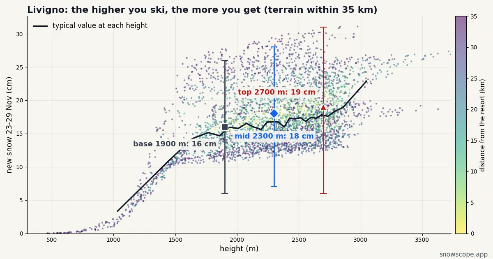

Poland snow today (16 November 2026): snow depth, new snow and resorts
Snow covers roughly 1,170 km² in Poland on 16 November, 910 km² less than yesterday. Roughly 11 % of the country's mapped mountains and hills are covered.
See the live snow forecast for Orlické Záhoří in the SnowScope appSnow depth, powder alerts and the 3D map, free.
How much of the country is white
Compared with 960 km² seven days ago, that is 210 km² more. Below about 1,000 m the slopes are mostly green or brown.
| Resort | Snow depth | New snow, 72 h | Coming, next days | Top |
|---|---|---|---|---|
| Orlické Záhoří | 45 cm | 0 cm | 4 cm | 1,022 m |
| COS Szczyrk | 34 cm | 0 cm | 1 cm | 1,244 m |
| Karpacz | 32 cm | 1 cm | 11 cm | 1,350 m |
| Stok Karpatka | 22 cm | 1 cm | 5 cm | – |
| Kasprowy Wierch | 20 cm | 1 cm | 10 cm | 1,958 m |
From the valleys to the summits
Average depth of the snowpack by height band: 500-1,000 m: on average under 1 cm (6 % of the ground white); 1,000-1,500 m: on average 3 cm (73 % of the ground white); 1,500-2,000 m: on average 13 cm (100 % of the ground white).
Fresh snow
Hardly any new snow fell in the last three days: the three-day maximum is 0 cm.
What it means on the slopes
Mild weather is eating into the cover: expect firm snow in the morning and slush in the afternoon.
Keep an eye on the forecast: the coming snow could change the picture quickly.
The next days
Over the next three days up to 6 cm is expected, and up to 15 cm over the week.
Tuesday 17 November stands out, with up to 5 cm in a day.
Further out, days 8 to 14 show up to 29 cm on the snowiest slopes.
Shortlist for the weekend
Orlické Záhoří leads with 45 cm on its upper slopes.
Close behind: COS Szczyrk (34 cm), Karpacz (32 cm), Stok Karpatka (22 cm) and Kasprowy Wierch (20 cm).
Orlické Záhoří had no fresh snow in the last three days; 4 cm could fall by Thursday 19 November.
COS Szczyrk had no fresh snow in the last three days; 1 cm could fall by Thursday 19 November.
42 of the 114 resorts we follow in Poland have snow on their upper slopes.
Tips for skiers
- Fresh snow on a cold base sticks badly: take care on steep slopes.
- Morning snow is firm after a clear night: wait for the sun on south faces.
- Snow above the tree line can be wind-packed: watch the ridges.
About these numbers
Resort snow depths are the deepest snow on the resort's upper slopes from the SnowScope snow model (about 1 km, run of 16 November); they are estimates for an area, not a measurement at one point. Station values are measurements on the date shown. Forecasts can change. Always read the official avalanche bulletin before going off-piste.
Cite this report
For research, teaching or the press: the numbers and charts are free to reuse under CC BY 4.0 with this citation.
SnowScope (2026), Poland snow today (16 November 2026): snow depth, new snow and resorts, https://snowscope.app/blog/en/2026/11/poland-snow-report-16-november-2026.html, accessed 2026-11-16
SnowScope (Atlas Labs). (2026, November 16). Poland snow today (16 November 2026): snow depth, new snow and resorts. SnowScope snow reports. https://snowscope.app/blog/en/2026/11/poland-snow-report-16-november-2026.html
BibTeX
@misc{snowscope2026polandsnowreport16novemb,
author = {{SnowScope (Atlas Labs)}},
title = {Poland snow today (16 November 2026): snow depth, new snow and resorts},
year = {2026},
month = nov,
howpublished = {\url{https://snowscope.app/blog/en/2026/11/poland-snow-report-16-november-2026.html}},
note = {Published 2026-11-16 20:42 UTC; accessed 2026-11-16}
}· CC BY 4.0 · Methods, data and tools →
Orlické Záhoří: snow and temperature by height, this winter vs last (tools) →
Follow Orlické Záhoří
Free: a message when fresh snow is coming, and the forecast every morning.
More snow reports

Madonna di Campiglio snow forecast for 23–29 November 2026: 27 cm at the top (8–46 cm), 23 cm at the base, snowiest day Wednesday 25 November, with neighbours compared.

Livigno snow forecast for 23–29 November 2026: 19 cm at the top (6–31 cm), 16 cm at the base, snowiest day Wednesday 25 November, with neighbours compared.

Next week's fresh snow in Les 2 Alpes: 20–73 cm on the upper slopes and 4–22 cm at the base (23–29 November 2026), best day, best slopes and how sure the forecast is.